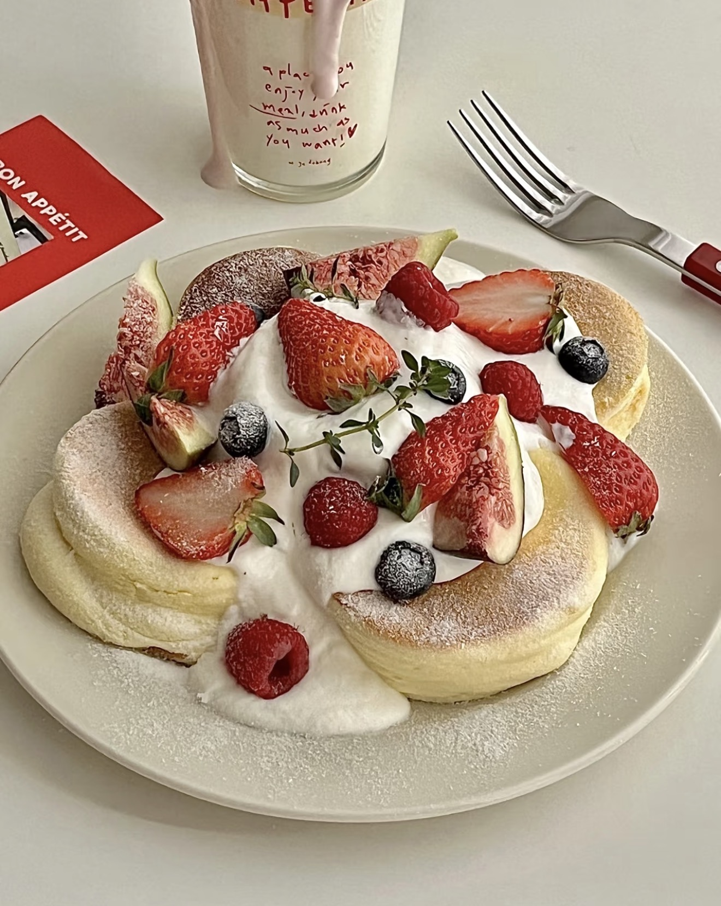
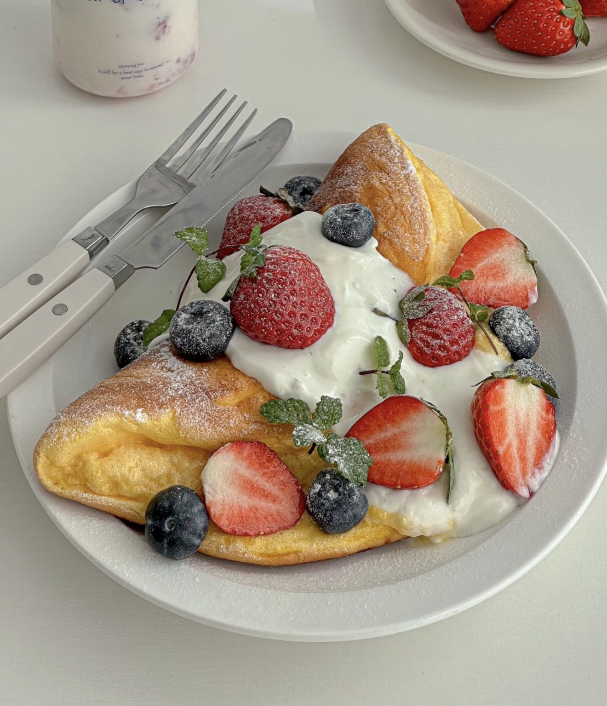

Soufflé
Light and airy dessert with a soft, fluffy texture.
Ingredients
- Eggs
- Milk
- Sugar
- Flour
- Cornstarch
- Butter
- Vanilla extract
Directions
- Separate egg whites and yolks.
- Mix yolks with milk and dry ingredients.
- Beat egg whites until stiff peaks form.
- Fold whites gently into batter.
- Pour into molds.
- Cook or bake until puffed.
- Serve immediately.